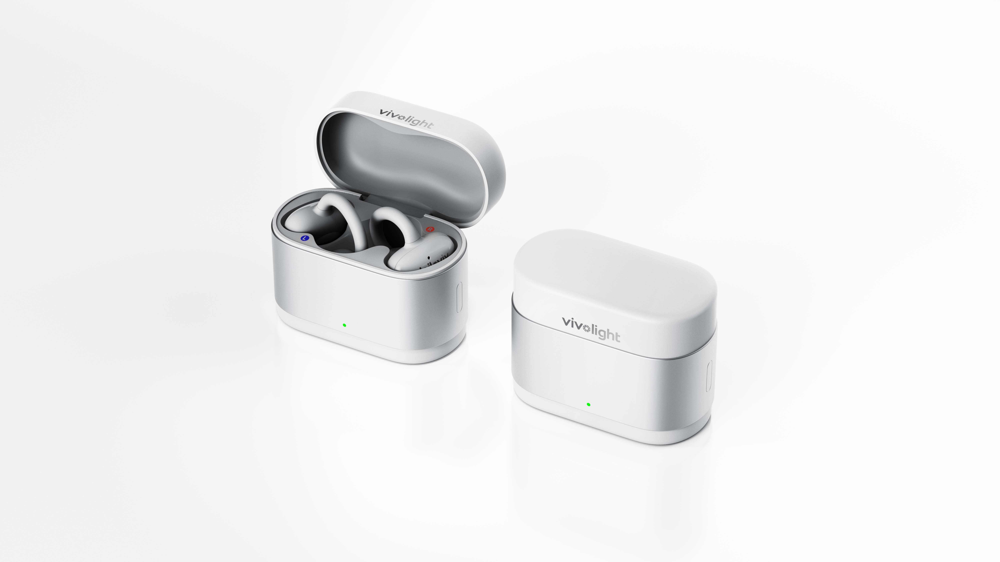
AI OPEN-EAR FITNESS COACH
Your heart rate finally has a voice.
PulseClip turns real-time heart-rate changes into simple coaching cues you can hear—without stopping to check another screen.
LISTEN TO YOUR BODY
Train by feel.
Guided by signal.
Your workout already creates the data. PulseClip is designed to translate that changing signal into the next useful cue—so your attention stays on the movement.
01 · REAL-TIME GUIDANCE
It hears the change.
You hear the next move.
Speed up. Hold steady. Ease off. PulseClip turns real-time heart-rate changes into clear, spoken actions that keep the workout moving.
02 · LESS SCREEN CHECKING
Your coach translates the data.
No repeated watch checks, zone decoding, or intensity guesswork. Hear a simple cue and stay focused on what your body is doing now.
03 · OPEN-EAR BY DESIGN
Guidance in.
The world stays open.
The clip-on form sits outside the ear canal, keeping music and coaching present while your surroundings remain audible.
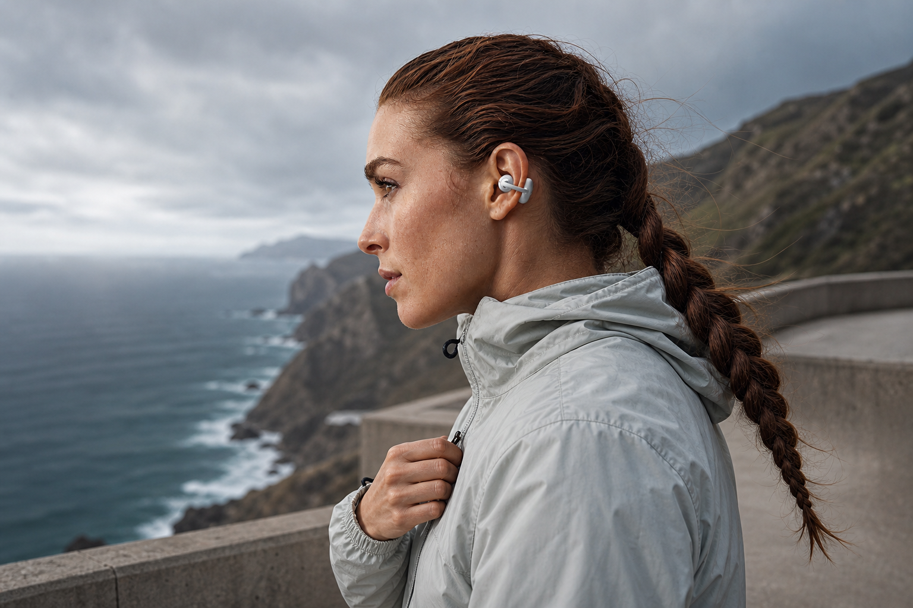
04 · BUILT FOR MOVEMENT
Stay with the session.
A compact open-ear shape designed around active movement—so the next cue arrives without breaking your rhythm.
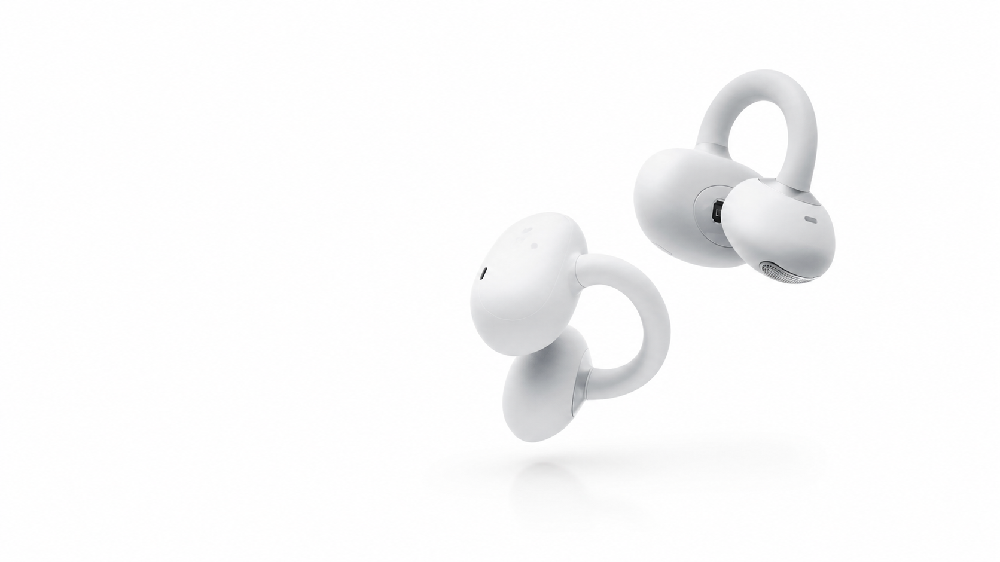
05 · AUDIO + COACHING
Music, podcasts, and your coach. Together.
Keep listening to what moves you while coaching cues arrive in the same open-ear experience.
06 · PROGRESS YOU CAN FEEL
One cue now.
A better rhythm over time.
PulseClip is designed to make the next action easier to understand, helping each workout feel more intentional without adding another dashboard.
DESIGNED AROUND THE EAR
A small form with a clear job.
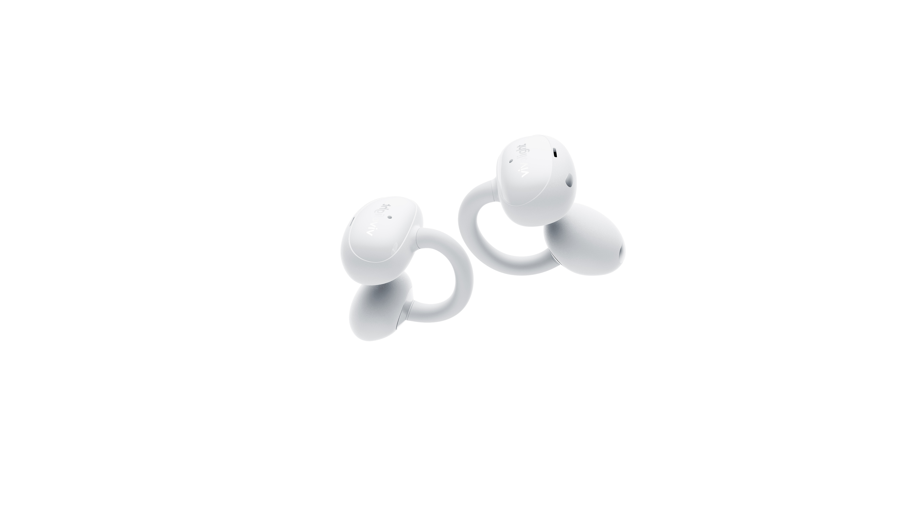
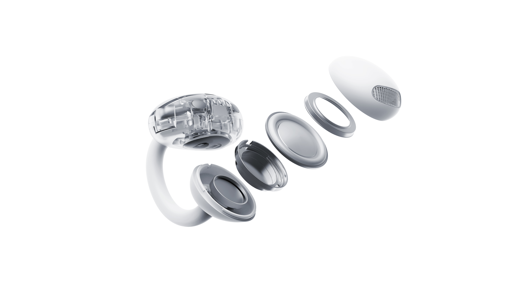
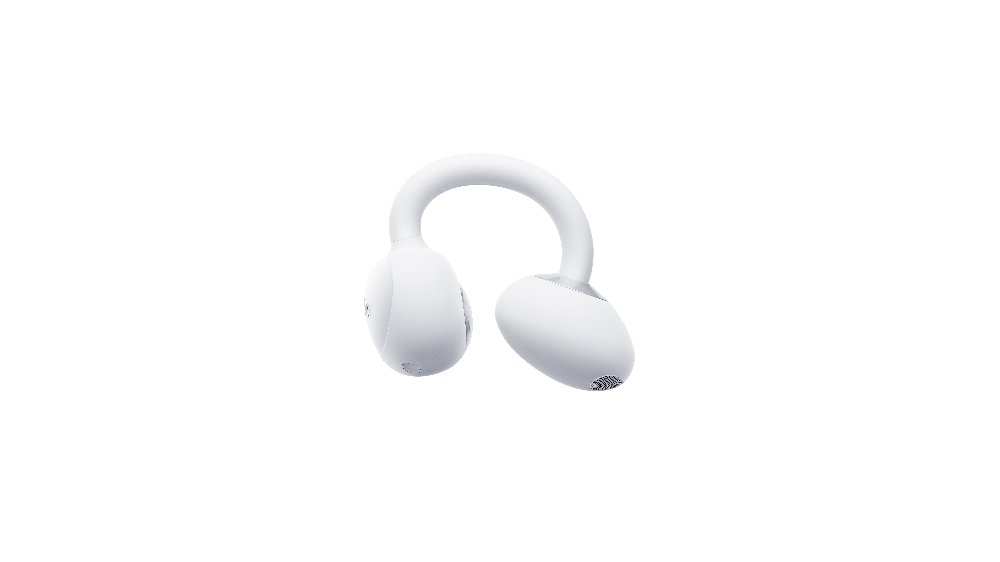
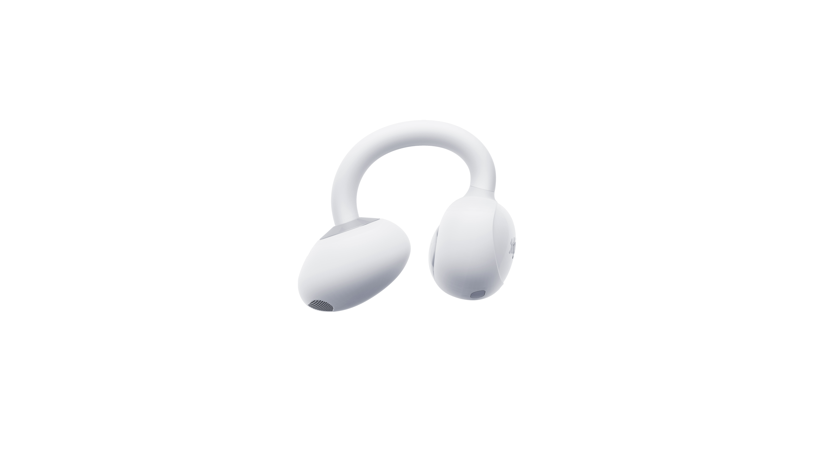
MORE PULSECLIP MOMENTS
Explore the story.
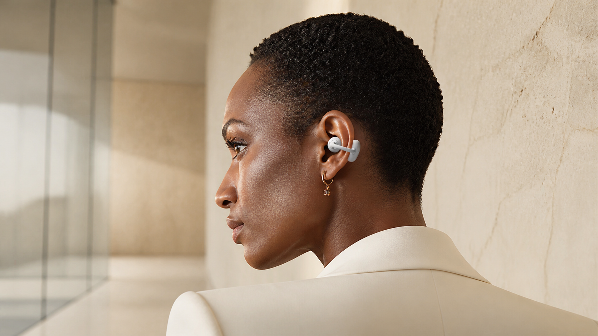
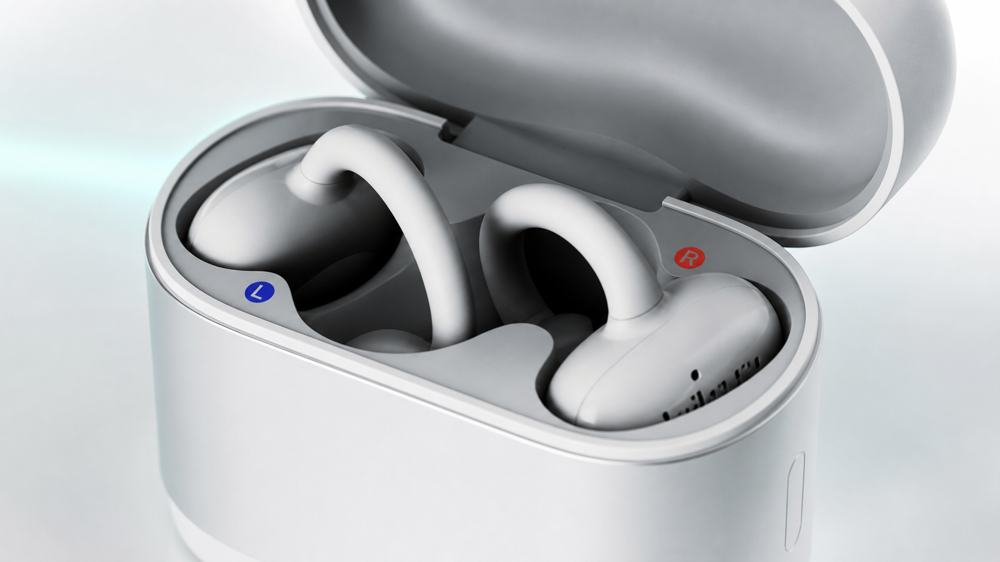
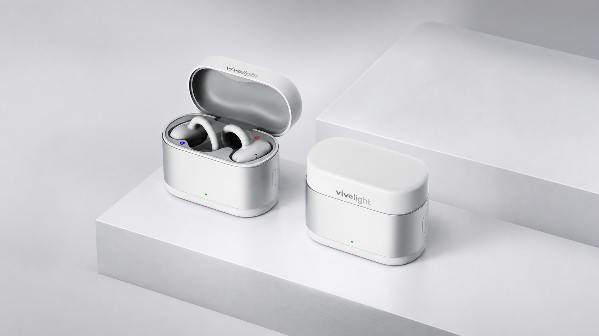
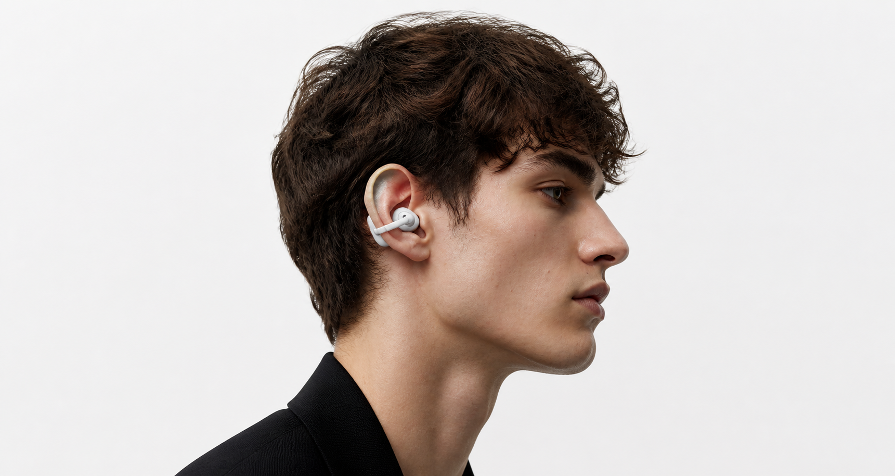
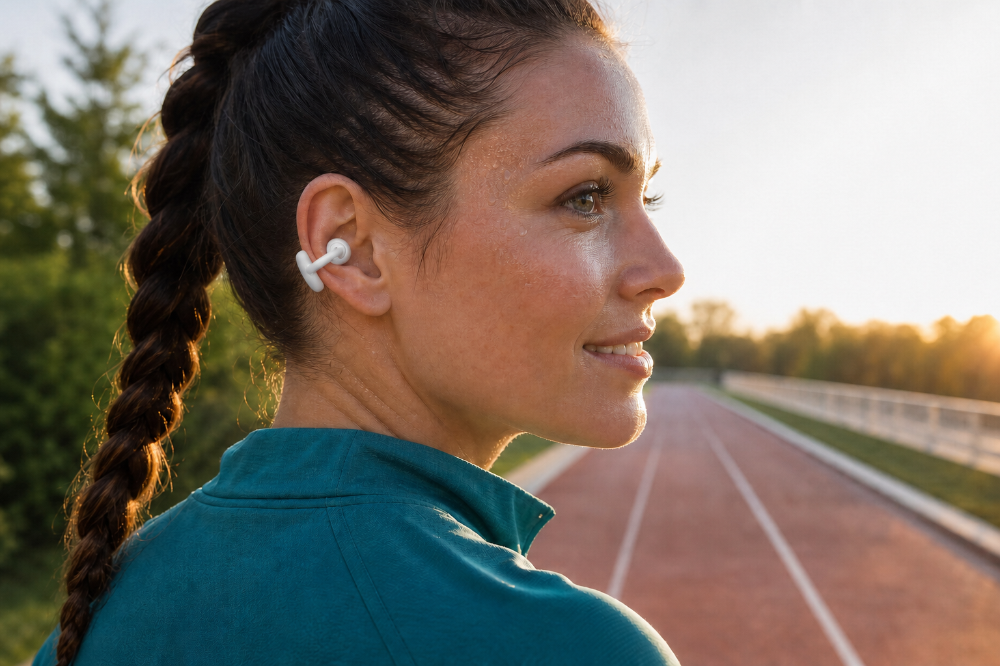
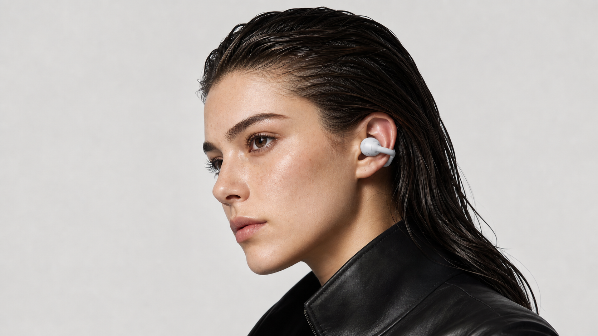
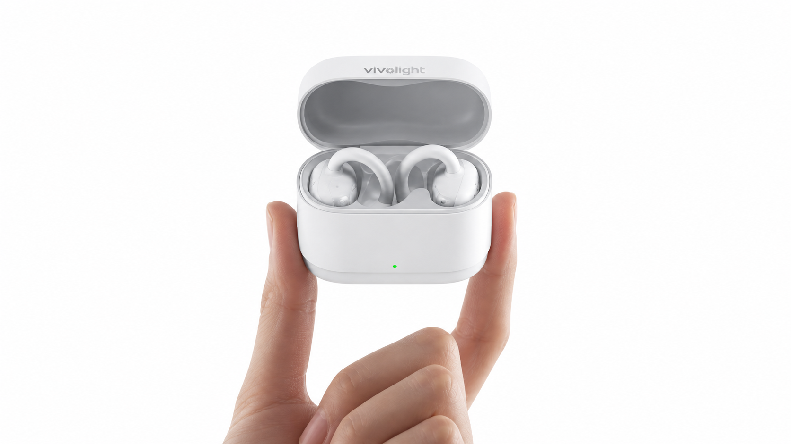
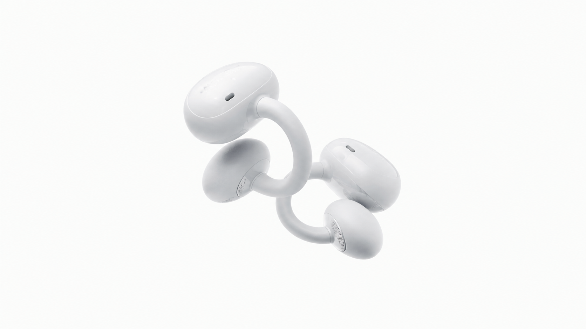
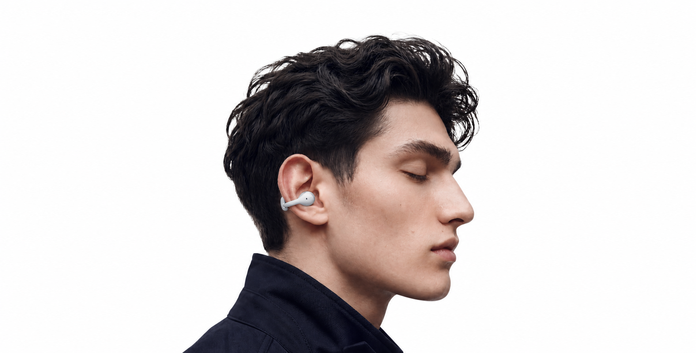
LAUNCHING SOON
Hear what your body is telling you.
Join the PulseClip list for launch news and early access updates.